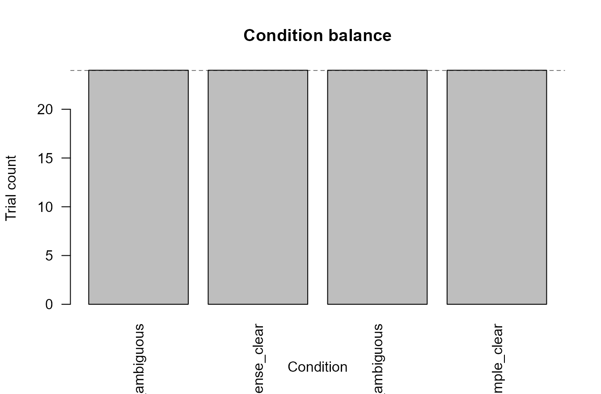
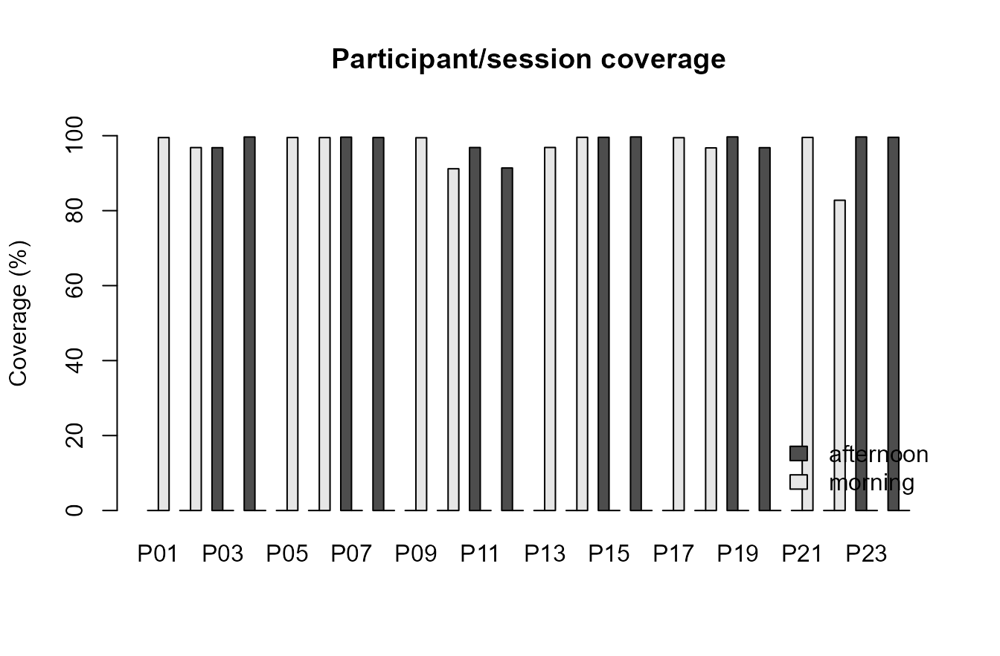
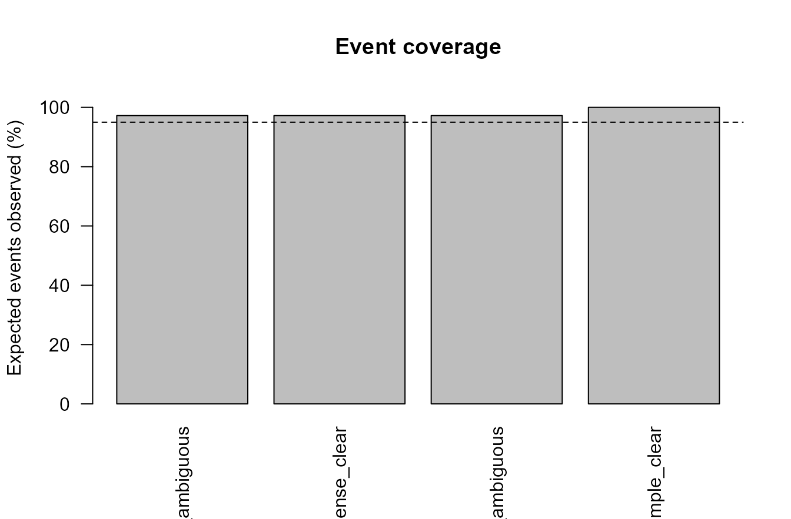
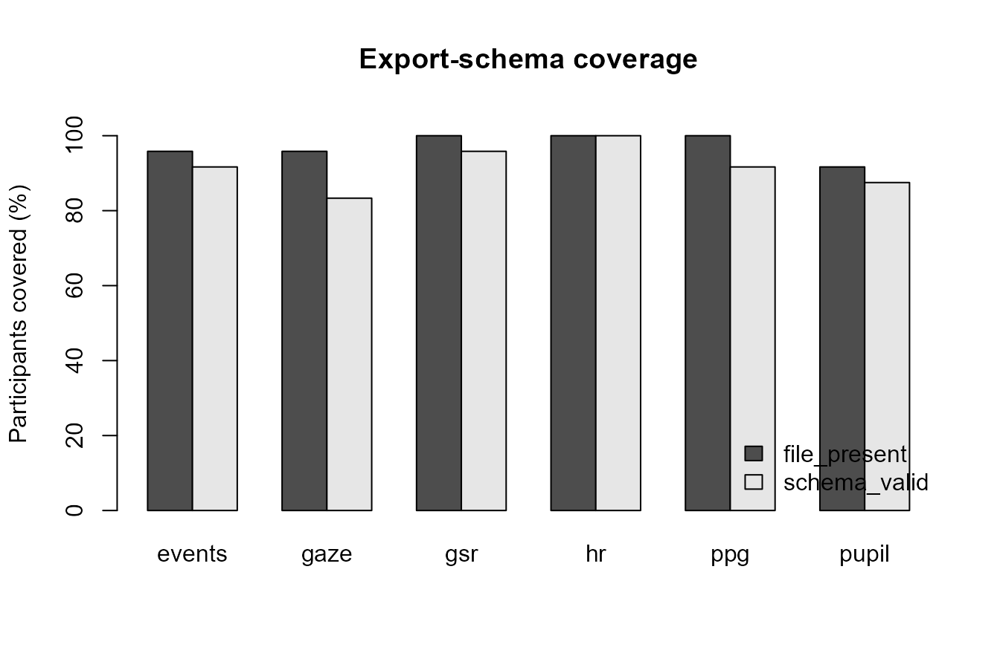
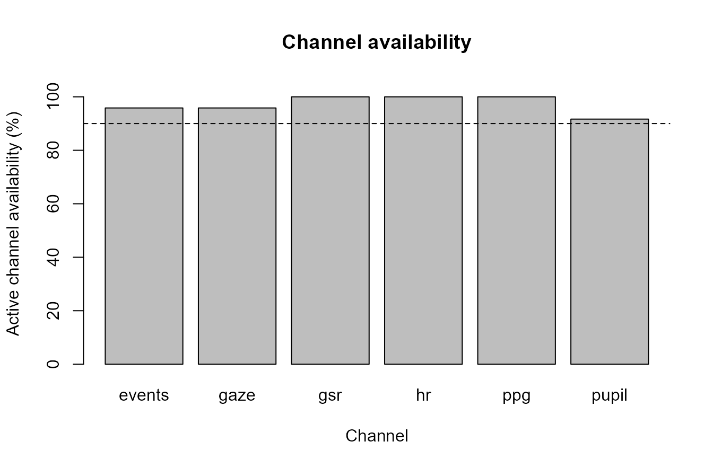
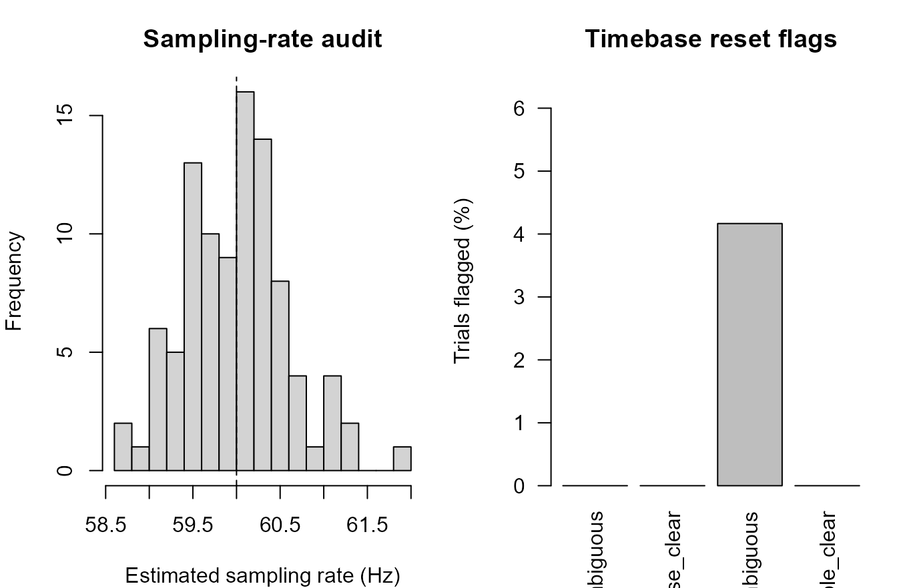
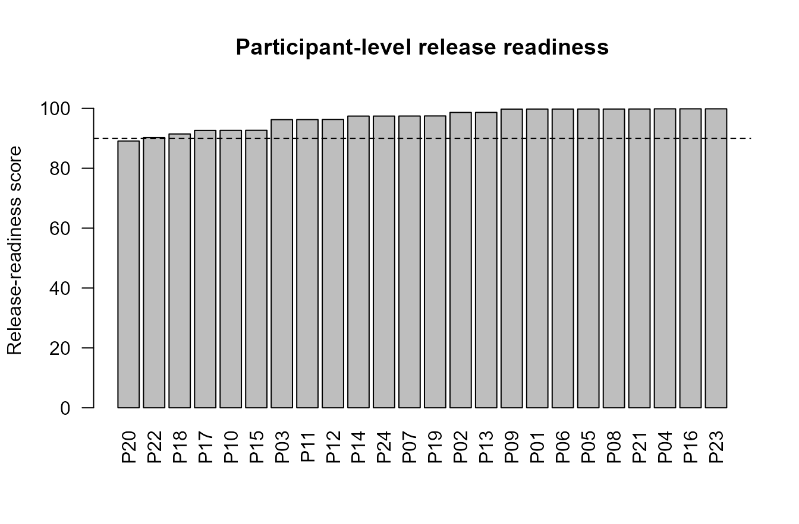
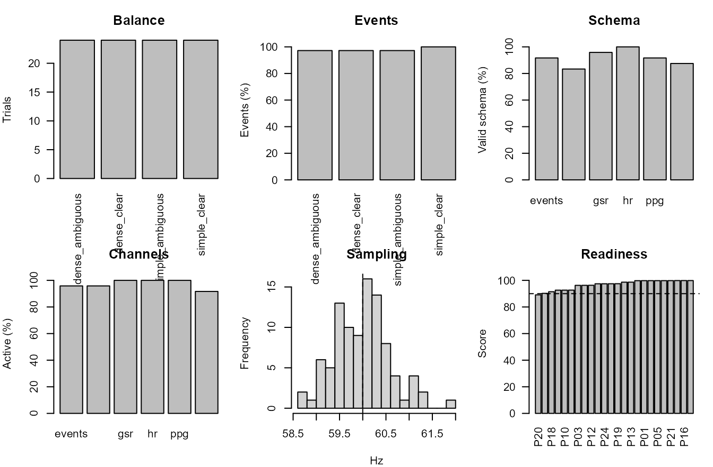

Design release visual audit
Source:vignettes/articles/design-release-visual-audit.Rmd
design-release-visual-audit.RmdPurpose
This article demonstrates a plot-rich design and release-readiness
audit workflow for gpbiometrics projects.
The workflow is structural and reproducibility-oriented. The figures show condition balance, participant/session coverage, event coverage, export-schema coverage, channel availability, sampling-rate and timebase checks, release-readiness scoring, and compact dashboard-style reporting. These outputs are design, coverage, metadata, timing, quality-control, and release-readiness diagnostics. They should not be interpreted as direct evidence of psychological, clinical, affective, attentional, workload-related, stress-related, autonomic, health-related, or substantive experimental effects.
Synthetic design and export metadata
The example uses synthetic metadata so that the article is reproducible and does not depend on private recordings.
participants <- sprintf("P%02d", 1:24)
sessions <- c("morning", "afternoon")
conditions <- c("simple_clear", "simple_ambiguous", "dense_clear", "dense_ambiguous")
channels <- c("pupil", "gaze", "gsr", "ppg", "hr", "events")
design <- expand.grid(
participant_id = participants,
condition = conditions,
KEEP.OUT.ATTRS = FALSE,
stringsAsFactors = FALSE
)
design$trial_id <- ave(seq_len(nrow(design)), design$participant_id, FUN = seq_along)
design$session <- rep(rep(sessions, each = length(conditions) / 2), length(participants))
design$expected_events <- 3L
design$observed_events <- design$expected_events - rbinom(nrow(design), 1, 0.04)
design$samples_expected <- 600L
design$samples_observed <- design$samples_expected - rpois(nrow(design), lambda = 8)
design$sampling_rate_hz <- round(rnorm(nrow(design), mean = 60, sd = 0.7), 2)
design$time_reset_flag <- runif(nrow(design)) < 0.025
design$metadata_complete <- runif(nrow(design)) > 0.03
exports <- expand.grid(
participant_id = participants,
channel = channels,
KEEP.OUT.ATTRS = FALSE,
stringsAsFactors = FALSE
)
exports$file_present <- runif(nrow(exports)) > ifelse(exports$channel == "events", 0.015, 0.035)
exports$schema_valid <- exports$file_present & (runif(nrow(exports)) > 0.025)
exports$channel_active <- exports$file_present & (runif(nrow(exports)) > ifelse(exports$channel %in% c("ppg", "gsr"), 0.045, 0.020))
exports$n_rows <- ifelse(exports$file_present, rpois(nrow(exports), lambda = 2400) + 300, 0L)
head(design)
#> participant_id condition trial_id session expected_events
#> 1 P01 simple_clear 1 morning 3
#> 2 P02 simple_clear 1 morning 3
#> 3 P03 simple_clear 1 afternoon 3
#> 4 P04 simple_clear 1 afternoon 3
#> 5 P05 simple_clear 1 morning 3
#> 6 P06 simple_clear 1 morning 3
#> observed_events samples_expected samples_observed sampling_rate_hz
#> 1 3 600 589 59.51
#> 2 3 600 593 58.62
#> 3 3 600 589 60.42
#> 4 3 600 592 59.96
#> 5 3 600 592 59.13
#> 6 3 600 593 60.19
#> time_reset_flag metadata_complete
#> 1 FALSE TRUE
#> 2 FALSE TRUE
#> 3 FALSE TRUE
#> 4 FALSE TRUE
#> 5 FALSE TRUE
#> 6 FALSE TRUE
head(exports)
#> participant_id channel file_present schema_valid channel_active n_rows
#> 1 P01 pupil TRUE TRUE TRUE 2815
#> 2 P02 pupil TRUE TRUE TRUE 2588
#> 3 P03 pupil TRUE TRUE TRUE 2790
#> 4 P04 pupil TRUE TRUE TRUE 2689
#> 5 P05 pupil TRUE TRUE TRUE 2749
#> 6 P06 pupil TRUE TRUE TRUE 2726Condition balance
Condition-balance plots check whether the planned design is represented in the working dataset.
condition_counts <- table(design$condition)
barplot(
condition_counts,
ylab = "Trial count",
xlab = "Condition",
las = 2,
main = "Condition balance"
)
abline(h = mean(condition_counts), lty = 2)
Synthetic condition-balance audit.
Participant and session coverage
Participant/session coverage shows whether missingness is concentrated in a session block or subgroup of recordings.
coverage <- aggregate(
cbind(
sample_coverage = design$samples_observed / design$samples_expected,
event_coverage = design$observed_events / design$expected_events,
metadata_complete = design$metadata_complete
),
by = list(participant_id = design$participant_id, session = design$session),
FUN = mean
)
coverage$overall_coverage <- rowMeans(coverage[, c("sample_coverage", "event_coverage", "metadata_complete")])
coverage_matrix <- xtabs(overall_coverage * 100 ~ participant_id + session, coverage)
barplot(
t(coverage_matrix),
beside = TRUE,
ylim = c(0, 105),
ylab = "Coverage (%)",
main = "Participant/session coverage",
legend.text = TRUE,
args.legend = list(x = "bottomright", bty = "n")
)
Synthetic participant/session coverage audit.
Event coverage
Event coverage checks whether expected markers are available before event-locked or multimodal-window analyses.
event_coverage <- aggregate(
observed_events / expected_events ~ condition,
data = design,
FUN = mean
)
names(event_coverage)[2] <- "event_coverage"
barplot(
event_coverage$event_coverage * 100,
names.arg = event_coverage$condition,
las = 2,
ylim = c(0, 105),
ylab = "Expected events observed (%)",
main = "Event coverage"
)
abline(h = 95, lty = 2)
Synthetic event coverage by condition.
Export-schema coverage
Schema coverage shows whether expected file types are present and compatible with the current import contract.
schema_summary <- aggregate(
cbind(file_present, schema_valid) ~ channel,
data = exports,
FUN = mean
)
schema_matrix <- rbind(
file_present = schema_summary$file_present * 100,
schema_valid = schema_summary$schema_valid * 100
)
colnames(schema_matrix) <- schema_summary$channel
barplot(
schema_matrix,
beside = TRUE,
ylim = c(0, 105),
ylab = "Participants covered (%)",
main = "Export-schema coverage",
legend.text = TRUE,
args.legend = list(x = "bottomright", bty = "n")
)
Synthetic export-schema coverage audit.
Channel availability
Channel-availability plots document which measurement streams are present and active before downstream preprocessing.
channel_summary <- aggregate(
channel_active ~ channel,
data = exports,
FUN = mean
)
barplot(
channel_summary$channel_active * 100,
names.arg = channel_summary$channel,
ylim = c(0, 105),
ylab = "Active channel availability (%)",
xlab = "Channel",
main = "Channel availability"
)
abline(h = 90, lty = 2)
Synthetic active-channel availability audit.
Sampling-rate and timebase audit
Sampling and timebase displays help identify irregular recordings before interpolation, alignment, or event-window extraction.
op <- par(mfrow = c(1, 2), mar = c(4, 4, 3, 1))
hist(
design$sampling_rate_hz,
breaks = 16,
xlab = "Estimated sampling rate (Hz)",
main = "Sampling-rate audit"
)
abline(v = 60, lty = 2)
time_resets <- aggregate(time_reset_flag ~ condition, data = design, FUN = mean)
barplot(
time_resets$time_reset_flag * 100,
names.arg = time_resets$condition,
las = 2,
ylim = c(0, max(5, time_resets$time_reset_flag * 100) * 1.3),
ylab = "Trials flagged (%)",
main = "Timebase reset flags"
)
Synthetic sampling-rate and timebase audit.
par(op)Release-readiness score
A release-readiness score can summarize technical checks for review. It is a reporting aid, not a substitute for inspecting individual diagnostics.
participant_design <- aggregate(
cbind(
sample_coverage = design$samples_observed / design$samples_expected,
event_coverage = design$observed_events / design$expected_events,
metadata_complete = design$metadata_complete,
no_time_reset = !design$time_reset_flag
),
by = list(participant_id = design$participant_id),
FUN = mean
)
participant_exports <- aggregate(
cbind(file_present, schema_valid, channel_active) ~ participant_id,
data = exports,
FUN = mean
)
readiness <- merge(participant_design, participant_exports, by = "participant_id")
readiness$release_score <- 100 * rowMeans(readiness[, -1])
readiness <- readiness[order(readiness$release_score), ]
barplot(
readiness$release_score,
names.arg = readiness$participant_id,
las = 2,
ylim = c(0, 105),
ylab = "Release-readiness score",
main = "Participant-level release readiness"
)
abline(h = 90, lty = 2)
Synthetic release-readiness score by participant.
Compact design-release dashboard
A compact dashboard combines balance, coverage, schema, channel, sampling, and readiness checks into one review-oriented display.
op <- par(mfrow = c(2, 3), mar = c(4, 4, 3, 1))
barplot(condition_counts, las = 2, ylab = "Trials", main = "Balance")
barplot(event_coverage$event_coverage * 100, names.arg = event_coverage$condition, las = 2, ylim = c(0, 105), ylab = "Events (%)", main = "Events")
barplot(schema_summary$schema_valid * 100, names.arg = schema_summary$channel, ylim = c(0, 105), ylab = "Valid schema (%)", main = "Schema")
barplot(channel_summary$channel_active * 100, names.arg = channel_summary$channel, ylim = c(0, 105), ylab = "Active (%)", main = "Channels")
hist(design$sampling_rate_hz, breaks = 12, xlab = "Hz", main = "Sampling")
abline(v = 60, lty = 2)
barplot(readiness$release_score, names.arg = readiness$participant_id, las = 2, ylim = c(0, 105), ylab = "Score", main = "Readiness")
abline(h = 90, lty = 2)
Compact synthetic design-release visual audit dashboard.
par(op)Relation to gpbiometrics helpers
The same reporting pattern can be paired with package-level helpers when project data use the expected column contracts.
| task | representative_helpers |
|---|---|
| Design and metadata validation | validate_gazepoint_metadata(); validate_gazepoint_biometrics() |
| Condition balance | audit_gazepoint_condition_balance(); plot_gazepoint_design_coverage() |
| Dataset-structure audit | audit_gazepoint_dataset_structure(); summarize_gazepoint_feature_coverage() |
| Event coverage | audit_gazepoint_event_coverage(); match_gazepoint_events_to_biometrics() |
| Export-schema coverage | audit_gazepoint_export_schema(); profile_gazepoint_export_folder() |
| Sampling and timebase checks | audit_gazepoint_biometric_sampling(); audit_gazepoint_time_resets() |
| Release readiness | audit_gazepoint_release_readiness(); create_gazepoint_release_checklist() |
| Report outputs | create_gazepoint_qc_supplement(); create_gazepoint_biometrics_report_tables() |
library(gpbiometrics)
metadata_check <- validate_gazepoint_metadata(
metadata,
required_cols = c("participant_id", "trial_id", "condition")
)
balance <- audit_gazepoint_condition_balance(
metadata,
condition_col = "condition",
participant_col = "participant_id"
)
schema <- audit_gazepoint_export_schema(
export_profile,
required_channels = c("pupil", "gaze", "gsr", "ppg", "hr", "events")
)
sampling <- audit_gazepoint_biometric_sampling(
biometric_data,
time_col = "TIME_MS",
participant_col = "participant_id",
trial_col = "trial_id"
)
time_resets <- audit_gazepoint_time_resets(
biometric_data,
time_col = "TIME_MS",
participant_col = "participant_id",
trial_col = "trial_id"
)
release <- audit_gazepoint_release_readiness(
metadata_check = metadata_check,
balance_check = balance,
schema_check = schema,
sampling_check = sampling,
timebase_check = time_resets
)
plot_gazepoint_design_coverage(balance)
create_gazepoint_release_checklist(release)Reporting recommendation
For manuscripts, technical supplements, repositories, and reviewer-facing reports, describe these figures as design, metadata, export-schema, event-coverage, sampling, timebase, quality-control, and release-readiness diagnostics. Avoid stronger substantive interpretation unless supported by the study design, validation evidence, controls, and modelling results.